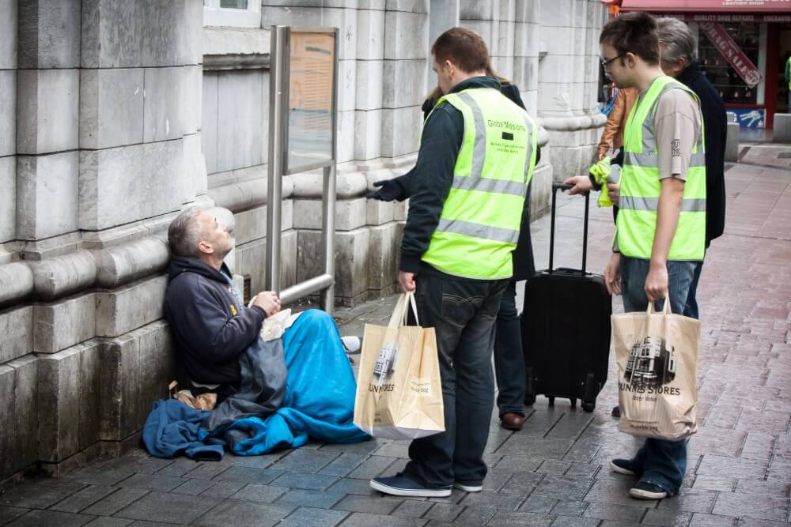

About us
At Support the Homeless, we are dedicated to raising awareness about homelessness and providing vital resources to those in need. Our mission is to empower individuals and families experiencing homelessness by offering support, compassion, and a path towards stability.
Our Mission
The Rescue Army brings hope to individuals encountering injustice and challenges by providing social, spiritual and financial support. The purpose of our campaign is to raise awareness of the problems that homeless people experience in everyday life through storytelling, highlighting the unique challenges that homelessness community face In Australia. Through this we aim to establish a positive community where individuals are free from the burdens of injustice and where everyone has the opportunity to prosper.
- Emergency shelter
- Food and nutrition assistance
- Job training and placement
- Healthcare access and support
- Community resources and referrals
Our Vision
We envision a world where everyone has access to safe housing, basic needs, and opportunities for personal growth. Together, we can create lasting change and support those in need.
Our Team
Emily Cane, Executive Director Emily specialises in social justice and community growth ,she has 8 years of experience in managing non-profit organisations. With a strong commitment to strengthening unprivileged groups, they have effectively established programs that foster long lasting change. Emily is dedicated to creating an innovative and collaborative culture in the Rescue Army. Jason Derulo, Program Director Jason has a plethora of expertise in community involvement and program creation, specialising in social work, he has developed effective programs that cater to the needs of underrepresented communities while working with a number of non-profit groups. Jason has a strong interest in creating programs that empower individuals and build resilience.
Meet our volunteers:
David O'Brien David has volunteered his time and talent for 2 years as a committed member of the Rescue Army, with the responsibility of organising events and fundraisers. He has a reputation for being amiable and eager to help out when required. David’s selfless dedication to serving others embodies the values of the Rescue Army Marly Smith Marly became a member of the Rescue Army team last year, she works on food distribution initiatives, assisting in making sure that basic necessities are provided to families who need it. Marly is well-liked and respected in the community because of her kind demeanour and interpersonal skills. She spreads her love of gardening by conducting classes that educate sustainable methods that encourage locals to cultivate fresh food.